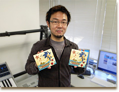
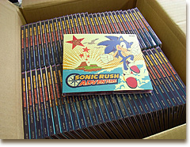

みなさんこんにちは！サウンドの大谷です。
「準備編」「アートワーク編」「マスタリング編」と続けてきたサントラ制作日記も、今回で最終回になります。
ちょっと真面目な内容になってしまいましたが、サントラ制作の裏側を垣間みる事で、また違った角度からの楽しみ方を見つけてもらえればと思っています。

ジャン！届きました。
デザインデータの入稿とマスタリングも済んでしまえばあとは製品が届くのを待つばかり。
ちゃんとプレスされてるかな？とか意味もなく心配してみたり、とても待ち遠しい期間です。
発売日の約１週間くらい前には製品が届くので、制作に関わった社内外の関係スタッフに、お礼を言いながら配って周ります。

発売日の頃には、既に新しいプロジェクトの制作で忙しかったりするのですが、音楽が良かったなんて声が聞けたりすると素直に嬉しいです。
このサイトにもサウンド試聴のコーナーがあるので、是非聴いてみて下さい。
サントラの制作が一段落ついた頃、ディレクターの大隅から、プロモーション用にテーマ曲のリミックスを制作して欲しいと依頼があり、公式サイトのトップページで流れている
『A New Venture - Surfin' S.R.A. Remix』
というバージョンを作りました。
オリジナルの『A New Venture』は、爽やかさを意識した部分もありますが、テンポのよい予告編映像などにもマッチする、勢いのあるリミックス。
別な言い方をすれば、勢いを除いたらもう何も残らないようなリミックスを狙いました。
タイミングが合えば、サントラにも収録したかったのですが残念です…。
今のところは、トップページの映像でお楽しみ下さい。
僕のこのコーナーはそろそろおしまいです。
今後も、ファンの皆さんに喜んでもらえるようなソニックのサウンドを作っていきたいと思っていますので、引き続きよろしくお願いします！
「ソニックチャンネル」
クリエイターズインタビュー 009：大谷智哉
ソニック ラッシュ アドベンチャーのサントラはこちらで購入できます。
ソニック ラッシュ アドベンチャー オリジナルサウンド トラック
女性ヴォーカルをフィーチャーしたテーマ曲 "A New Venture"を 含む、ゲーム内で使用されている全52曲を完全収録！
こちらもまだまだ買えますのでよろしくです。
ソニック・ザ・ヘッジホッグ ヴォーカル・トラックス セヴラル・ウィルズ
“Zebrahead”のシンガーを迎えたメインテーマ『HIS WORLD』他 オリジナル４曲のヴォーカルトラックに加え本作のためにレコーディングされた３曲の未発表バージョン収録